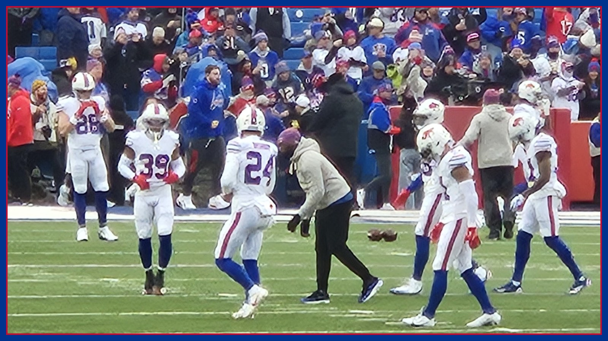

Buffalo Bills are 9-1: Cook breaks the record and the defense allows no touchdown again in 26-9 win over Miami
The Buffalo Bills beat Miami 26-9 on Sunday to reach 9-1 for the first time since 1991, per Reuters. James Cook set the NFL single-season record with his ninth straight game of 75+ rushing yards and a touchdown, per the Bills, and the defense ran its touchdown-less streak to 43 straight drives, per the Democrat and Chronicle — but two Allen interceptions and a 2-for-5 red zone left Buffalo's quarterback "a little ticked off" with Kansas City arriving Thanksgiving night.

The Buffalo Bills are 9-1 for the first time since 1991, and they got there the hard way to watch. Buffalo beat the Miami Dolphins 26-9 on Sunday at Highmark Stadium — a sixth straight win and an 11th straight home win over Miami, per Reuters — behind 304 passing yards from Josh Allen and 89 rushing yards and a touchdown from James Cook, per Reuters. The scoreboard says comfortable. Nobody in the home locker room described it that way. Head coach Joe Brady, with no smile in sight, put it plainly, per the Democrat and Chronicle: "I enjoy winning. I enjoy it for the guys, but we've got to continue to get better." Allen called it a luxury to be 9-1 and still be, in his words via Athlon Sports, "a little ticked off" about the performance. Both things are true, and the next four days will decide which one matters more.
Start with the history, because Sunday made some. Cook carried 22 times for 89 yards and a one-yard touchdown, per the Bills' official recap — and with that, he became the first player in NFL history to rush for at least 75 yards and a touchdown in nine consecutive games in a single season, per the Bills. The streak passes LaDainian Tomlinson (eight straight in 2006) and John Riggins (eight straight in 1983), per the Bills, and Cook now sits one game behind Terry Allen's overall record of 10 straight, set across the 1995 and 1996 seasons, per Buffalo Rumblings. The touchdown was also a franchise first — nine straight games with a rushing score — and it pushed Cook past 1,000 rushing yards for the season, to 1,060, making him just the second Bill ever to reach 1,000 in the first 10 games of a season, joining O.J. Simpson in 1973 and 1975, per the Democrat and Chronicle. One more Cook note for the record book: he and Allen are now the first pair of teammates in NFL history with at least 10 rushing touchdowns in three consecutive seasons, per the Bills' official recap. Film Room told you Friday that Cook needed one normal Sunday. He delivered it, and the record book moved.
The defense, meanwhile, has stopped allowing touchdowns altogether. Miami managed 185 total yards and three field goals, per theScore's game summary and NBC Sports, which noted this is the third straight game Buffalo has allowed nothing more than a field goal. The streaks underneath that are staggering: 43 consecutive opponent drives without allowing a touchdown, a franchise record, per the Democrat and Chronicle, and 15 consecutive quarters without an end-zone trip, per the same reporting. Dolphins quarterback Kyle McCord, making his second career start, completed just 12 of 33 passes for 102 yards and threw an interception to Damar Hamlin, per the Democrat and Chronicle. Greg Rousseau recorded two sacks in the first half, his ninth and 10th of the season — the first double-digit sack season of his career, per Sports Illustrated. And Tre'Davious White, elevated from the practice squad with Christian Benford out, played 42 percent of the defensive snaps in his first live action of the season, per Bills On SI. Defensive coordinator Jim Leonhard's unit was the problem in September. In late November, it is the identity of a 9-1 team.
Now the part Allen is ticked off about, because it is real. Buffalo piled up 405 yards and 25 first downs, per the Democrat and Chronicle, but scored touchdowns on only two of five trips inside Miami's 20-yard line, per Athlon Sports, and settled for four Tyler Bass field goals, per the Democrat and Chronicle. Allen finished 27 of 45 for 304 yards and one touchdown with two interceptions, both in the first half, per Athlon Sports. The Democrat and Chronicle's report card graded the pass offense and run offense both at C, noting the offensive line could not create the gaps Buffalo is used to and Cook had to work for almost every one of his 89 yards. Against a banged-up Miami defense missing its interior, that is a fair grade — and it is exactly the kind of afternoon that gets a team beat on Thursday night.
The receivers carried the passing game while tight end Dalton Kincaid sat out. Khalil Shakir caught five passes for 101 yards, including gains of 38 and 32 — the sixth 100-yard game of his career, per the Democrat and Chronicle. DJ Moore caught eight passes for 91 yards and a touchdown, and five of his catches produced first downs, per the same reporting. Moore also gave Buffalo its newest short-week worry: he hyperextended his knee in the first half, left the field briefly, and returned to finish the game, per Athlon Sports. He said so himself after the game, per the same reporting. On a week with three days of preparation, Moore's knee is the first name to watch when practice reports post.
The strangest highlight belonged to the punter who never punted. Buffalo did not punt once all afternoon — and on its only punt formation, a fourth-and-8 from its own 34 in the first quarter, rookie Tommy Doman threw a 30-yard pass to tight end Keleki Latu on a fake, per Sports Illustrated. Doman is the first Bills punter to complete a pass since Chris Mohr in 2000, per the same reporting, and he added a tackle on a kickoff for good measure. It was that kind of day: a fake punt for 30, four field goals, two interceptions, a franchise-record defensive streak, an NFL record for the running back — and a 17-point win that still left the quarterback annoyed.
Which brings us to Thursday. The Kansas City Chiefs, 8-2 and fresh off a 34-7 win over Arizona, per the Democrat and Chronicle, visit Highmark Stadium on Thanksgiving night, Nov. 26. Buffalo's streak of 15 straight quarters without allowing a touchdown has been built against Fagnano, Wentz, Klubnik and McCord. Patrick Mahomes is none of those names, and everyone in Orchard Park knows it — Allen said it himself, per the Democrat and Chronicle: "We know what type of team they are." The Bills are 9-1, alone on top of the AFC East, with Cook chasing Terry Allen's record and a defense chasing a fourth straight game without allowing a touchdown. They also have three days to fix a red-zone offense that just went 2-for-5 against a 1-9 team. Enjoy 9-1 tonight. The real exam starts Thursday. Go Bills — and get every Chiefs-week practice report, starting with DJ Moore's knee, in your inbox every morning with The BNC Blitz.
The BNC Blitz is free: the day's Bills news, one stat that matters, and one take, every morning. Join to keep reading — and never miss the end of a story again.